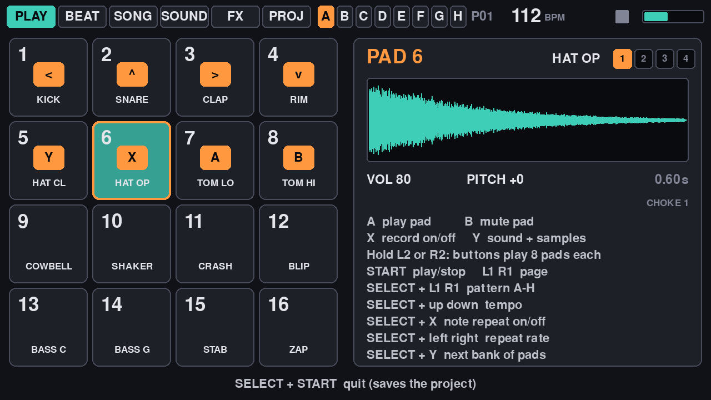
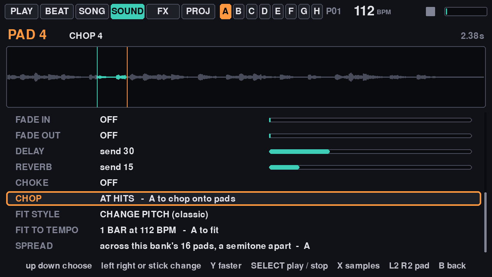
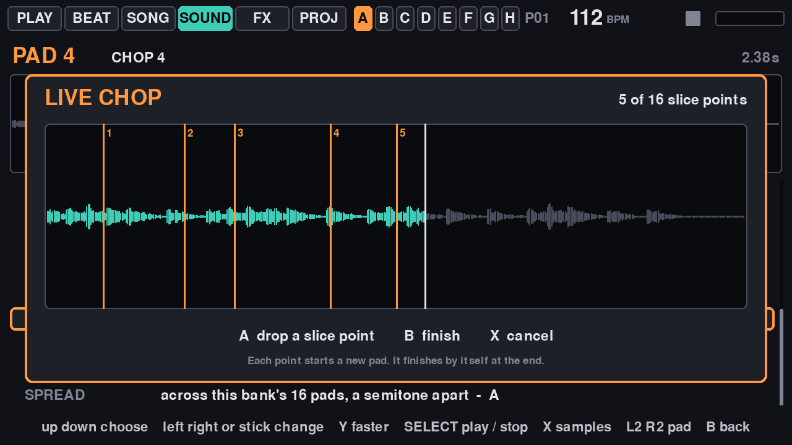
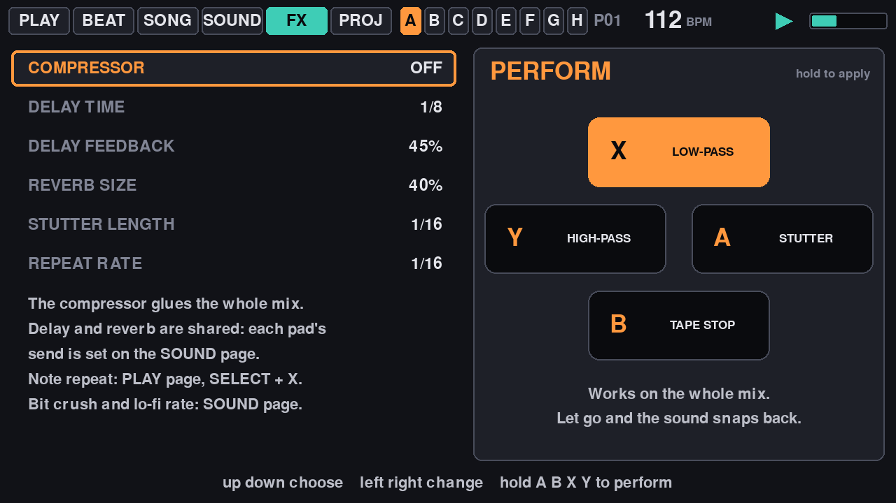
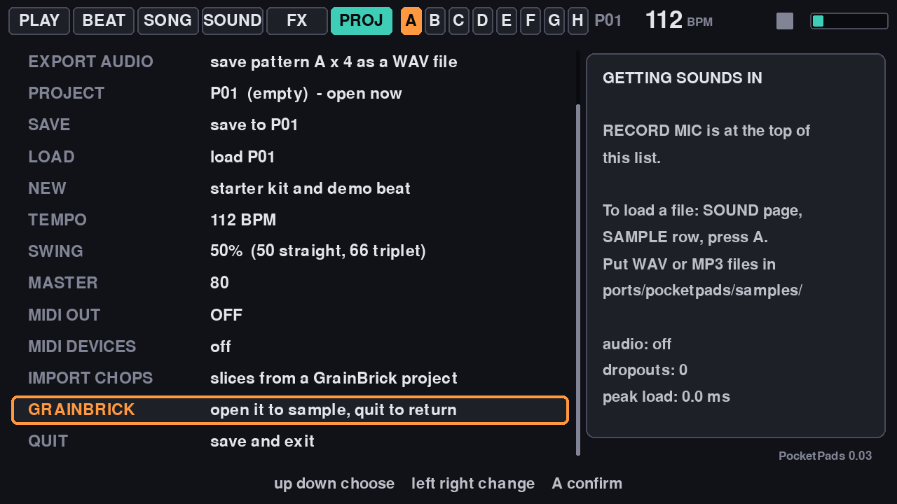
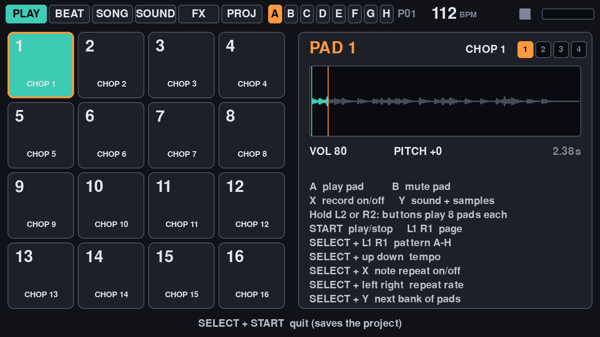
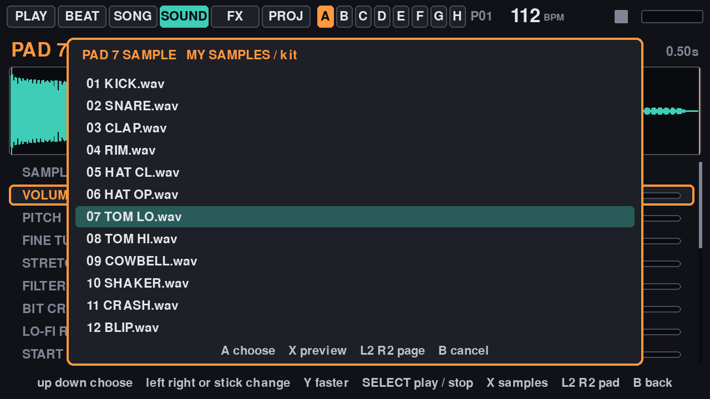

PocketPads
A 16-pad sample sequencer for the TrimUI Smart Pro. Put sounds on pads, tap out a beat, and build it into patterns.


How it works
PocketPads is a drum machine in the MPC tradition. Everything follows one path, from a sound file to a finished loop.
The six pages
The tabs along the top are the six pages. L1 and R1 move between them. The bar also shows the current pattern, project slot, tempo, and an output meter.

Play the pads by hand
Move the cursor to a pad and press A to hear it. For finger drumming, hold a trigger: the D-pad and the four face buttons become eight pads at once.
- A
- Play the selected pad
- B
- Mute or unmute it
- X
- Record on or off. While the beat runs, what you play is written into the pattern on the nearest step.
- Y
- Jump to the SOUND page for this pad
- L2 hold
- Buttons play the first eight pads of the bank
- R2 hold
- Buttons play the other eight
- SELECT+Y
- Next bank of pads. The four numbered squares show which bank is on screen.
- SELECT+X
- Note repeat on or off. With it on, holding a pad retriggers it in time, for rolls.
- SELECT+LEFT RIGHT
- Repeat rate, from 1/4 to 1/32 including triplets

Draw the beat on a grid
One row per pad, one column per step. Move the cursor with the D-pad and fill in where each sound should hit.
- A
- Turn a step on or off. Keep it held and move to paint a run of steps, or wipe one.
- Y
- Accent the step (louder)
- SELECT+LEFT RIGHT
- Step note: move this step up or down a semitone, for basslines and melodies from one pad. The step shows its note.
- SELECT+L2 R2
- Step note down or up an octave
- B
- Mute the track
- X
- Solo the track
- L2 R2
- Jump four steps
- SELECT+A
- Clear the track
- SELECT+X
- Clear the whole pattern

Chain patterns into a song
Build each section of a track as its own pattern, then list the patterns in the order they should play. With song mode on, START plays the chain from the top and loops it.
- Chain. Up to 64 slots. On the empty slot at the end, A adds the current pattern. On a filled slot, A and Y step through the patterns, X repeats the slot and B removes it.
- Copy pattern. Copies the current pattern to another letter and switches to it, the quick way to make a variation.
- Clear pattern. Empties the current pattern.
- Length. 16 to 128 steps per pattern. Left and right change it a bar at a time; hold Y to change it one step at a time for odd lengths.



Shape each pad
Set a pad's volume and pitch, and trim where the sound starts and ends. The waveform shows the whole file with the kept section lit.
- Filter. One control: left closes a low-pass (darker), right raises a high-pass (thinner).
- Delay and Reverb. How much of this pad is sent to the shared echo and room.
- Choke. Pads in the same group cut each other off, so a closed hi-hat silences the open one.
- Hear it. The waveform is selected first: press A to play the pad and A again to stop, with a line showing where it is. A tap of SELECT does the same from any row, so you can change a setting and hear it straight away.
- Sample. The first row in the list opens the file browser. X previews a file without loading it.
- Mode. One-shot plays to the end. Hold plays only while the button is down. Loop starts on one hit and stops on the next.
- Reverse, Fade in, Fade out, Fine tune. Flip the sound, soften its edges, or tune it in cents.
- Chop. Cut this pad's sample onto the pads: at detected hits, into 4, 8 or 16 equal pieces, or live, where the sample plays and you tap A wherever a new pad should begin.
- Bit crush and Lo-fi rate. Fewer bits adds grit; a lower sample rate gives the dull, ringing top of old samplers.
- Stretch. Makes a sound longer or shorter, from half to double its length, without changing its pitch. Drum hits are kept sharp and on time; long held notes can turn a little grainy at large settings. Works on samples up to 30 seconds.
- Fit to tempo. Makes a loop last exactly one beat, one bar or several bars at the project tempo. Fit style chooses how: Keep pitch stretches it, so the loop stays in key; Change pitch speeds it up or slows it down like a classic sampler.
- Spread. Puts this sound on all sixteen pads a semitone apart, with this pad as the root, for bass lines and melodies.
The list scrolls. The right stick works as a data wheel here and on the FX and PROJ pages: push it sideways to change the selected value, further for faster.
- UP DOWN
- Choose a setting
- LEFT RIGHT
- Change it. Hold Y to move five times faster.
- A
- Hear the pad
- X
- Pick a different sample
- L2 R2
- Previous or next pad
- B
- Back to PLAY
Pitch runs two octaves up or down in semitones. Like a classic sampler, pitching up also shortens the sound; use Stretch to change the length on its own.

Effects and live performance
The left side sets the master compressor, which pulls the whole mix together, and the shared delay and reverb: delay time locked to the tempo, feedback, and reverb size. The right side is for playing the mix itself. Hold a face button and the effect applies to everything; let go and the sound snaps back.
- A hold
- Stutter: loops the last slice of the beat
- B hold
- Tape stop: the mix slows to a halt
- X hold
- Low-pass sweep: the sound closes down and goes dark
- Y hold
- High-pass sweep: the lows drop out

Projects and global settings
Choose a row with up and down, change values with left and right, and press A to run an action. Anything that would overwrite work asks first.
- Project, Save, Load, New. Sixteen slots, P01 to P16. New gives you the starter kit and a demo beat.
- Record. Ten seconds from the built-in microphone, cut at each hit and placed on the pads.
- Resample. Records what PocketPads itself is playing, effects included, onto the selected pad. Press START to finish.
- Tempo and Swing. 40 to 300 BPM. Swing uses the MPC scale: 50% is straight, 66% is a triplet shuffle, 75% is the most it goes.
- Export audio. Saves the song, or four rounds of the current pattern, as a WAV file in
samples/exports/. - Master. Overall output level.
- MIDI out and MIDI devices. See MIDI below.
- Import Chops and GrainBrick. The link to GrainBrick, described below.
The panel on the right reports audio health: dropouts and peak load for the session.
Controls that work everywhere
| Buttons | What they do |
|---|---|
| START | Play or stop the beat |
| L1 R1 | Previous or next page |
| SELECT+L1 R1 | Previous or next pattern (A–H) |
| SELECT+Y | Next bank of pads (1–4) |
| SELECT+UP DOWN | Tempo up or down by 1 BPM |
| SELECT+START | Quit, saving the project to its slot |
Button names match what is printed on the Smart Pro: A is the right-hand face button and B is the bottom one.
MIDI
Plug a USB MIDI controller into the handheld and PocketPads connects to it by itself; the MIDI DEVICES row on the PROJ page shows what it found. This part is new and has not yet been tried with real hardware, so expect rough edges.
- Pads and keys. Notes from C1 (note 36) upward play pads 1 to 64, with velocity.
- Knobs. The first eight knobs, in the order of their controller numbers, set the selected pad's volume, pitch, filter, delay, reverb, start, end and fade out.
- MIDI out. Choose a channel on the PROJ page and every pad that sounds also sends a note, with step notes included, so the sequencer can play an external synth. Clock, start and stop go out too, to keep other gear in time.
- Start and stop from a controller start and stop the beat.
Working with GrainBrick
PocketPads records and chops on its own, but GrainBrick goes much further with sampling, so the two apps share sounds. GrainBrick saves recordings as WAV files and stores slice points in its project files, and PocketPads reads those directly. GrainBrick itself is not modified.
- Hop overOn the PROJ page choose GRAINBRICK. Your project is saved and GrainBrick opens.
- Sample and chopRecord or load a sound, slice it on GrainBrick's RHYTHM page, and save the GrainBrick project.
- Come backQuit GrainBrick with START+SELECT. You land straight back in PocketPads.
- Import the chopsChoose IMPORT CHOPS, pick the project, and its slices land on pads 1–16.


- Single sounds work too. The sample picker on the SOUND page has GrainBrick's recordings and samples folders next to your own.
- Slices are of the original sample. You get the raw audio between the slice points, without GrainBrick's granular processing or effects.
- To capture the processed sound, record it in GrainBrick, then load that recording onto a pad.
- Sixteen slices at most. If a GrainBrick project has more, the first sixteen are imported.
- Save in GrainBrick first. The import reads saved project files, so unsaved chops will not appear.
- Switching takes a few seconds each way, because each app has to start up.
Using your own samples
Copy WAV or MP3 files into the samples folder on the SD card, in subfolders if you like. To load one, go to the SOUND page and press A on the SAMPLE row at the top, or press X from any row. In the picker, X previews a file and A assigns it to the pad.
/userdata/roms/ports/pocketpads/samples/
WAV files at any sample rate work, mono or stereo, in 8, 16, 24 or 32-bit, including 32-bit float. MP3, FLAC, OGG, M4A, AAC, AIFF and Opus files are converted to WAV the first time you pick them. Any file longer than three minutes is cut at three minutes.

Under the hood
How sound is made
PocketPads is written in Python with pygame for the screen and buttons, and NumPy for audio. Three ideas keep it fast enough for a handheld.
- Sounds are prepared ahead of time. When you change a pad's pitch or trim, the result is rendered once and stored. Playing a pad is then just adding numbers together.
- The sequencer counts audio samples, not screen frames. Each step lands on an exact sample position, so timing does not drift or wobble with screen redraws.
- Audio runs on its own thread and feeds the sound card in small blocks, about 12 milliseconds each, keeping a short queue ahead of playback.
Delay and reverb are shared: pads send into them instead of each having their own, which keeps the load low. A gentle limiter on the output rounds off peaks when many sounds overlap, with headroom left so single hits stay clean.
Where things live
/userdata/roms/ports/
PocketPads.sh launcher shown in the Ports menu
pocketpads/
main.py screens and buttons
engine.py audio engine and sequencer
kit.py builds the starter kit
samples/ your WAV files, plus samples/kit
projects/ P01.json to P16.json
pocketpads.log button presses and audio stats
Projects are small text files listing each pad's sample and settings and each pattern's steps. The samples themselves are not copied into the project, so keep the files a project uses.
The launcher is also what makes the GrainBrick hop work: when PocketPads exits asking for GrainBrick, the launcher runs GrainBrick and then starts PocketPads again.
Where it stands
This is an early version, tested on one TrimUI Smart Pro running KNULLI Scarab. Pads, the step grid, patterns, projects, the GrainBrick link, note repeat, per-pad filter, delay and reverb, choke groups and the performance effects, microphone recording, chopping, resampling, time-stretch, song mode, lo-fi, a master compressor, audio export and pad banks are all in. MIDI is in but untested with real controllers. Not built: Bluetooth MIDI, and naming projects.
PocketPads is open source under the MIT licence. The code and install instructions are at github.com/prone/pocketpads.